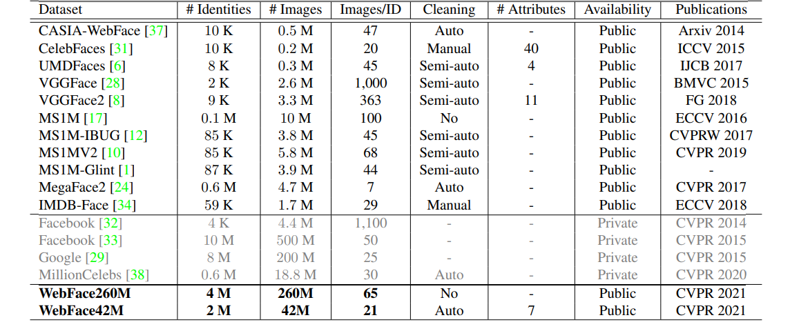
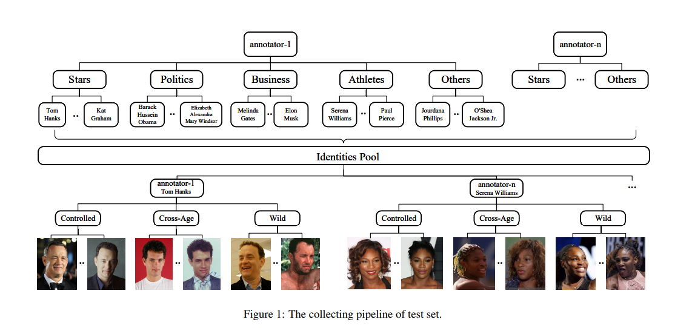
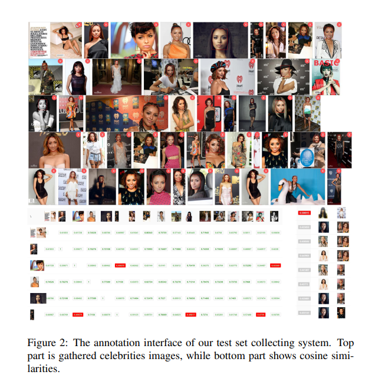
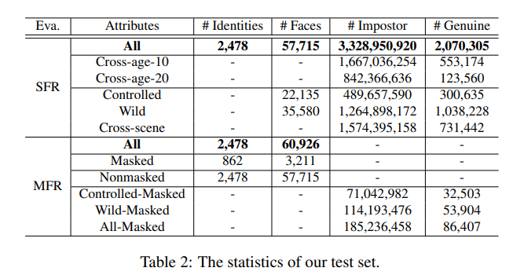
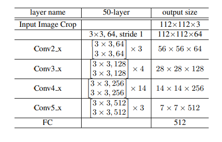
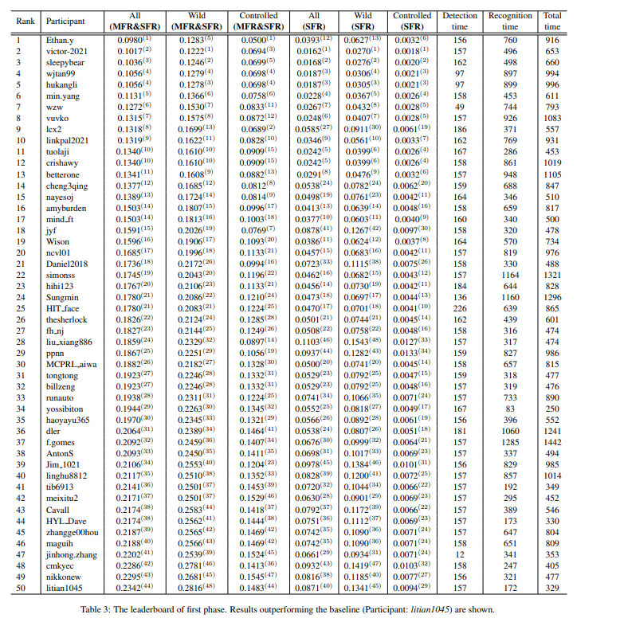
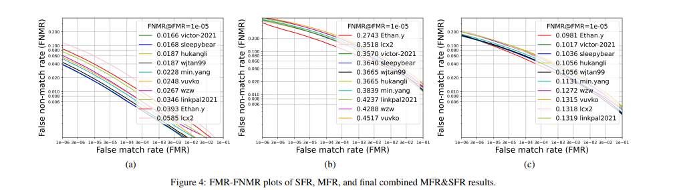

Masked Face Recognition Challenge: The WebFace260M Track Report
摘要
据世卫组织统计，截至2021年8月12日，全球新冠肺炎确诊病例超过204617027例，死亡4332247例。在冠状病毒疫情期间，几乎每个人都戴口罩。传统上，人脸识别方法主要处理无遮挡的人脸，包括眼睛、鼻子和嘴巴等主要面部特征。在机场或实验室进行身份验证时，摘下口罩将增加病毒感染的风险，但也对现有的人脸识别系统构成巨大挑战。由于疫情的突然爆发，目前还没有公开可用的真实世界戴口罩人脸识别(MFR)基准。为了应对上述问题，我们组织了2019冠状病毒病研讨会下的面部生物计量学和2021年ICCV戴口罩人脸识别挑战赛。在超大规模WebFace260M基准测试和推理时间约束下人脸识别(FRUITS)协议的支持下，该挑战(WebFace260M Track)旨在推动实用MFR的前沿。由于公众评价集大部分都是饱和的或有噪音的，所以新收集了2478名明星和60926张面孔组成的测试集。同时，我们收集了世界上最大的真实世界口罩测试集。在WebFace260M Track的第一阶段，有69个团队(总共833个解决方案)参与了挑战，其中49个团队的表现超过了我们的基准。挑战的第二阶段将持续到2021年10月1日，并持续进行排行榜。我们将在未来积极更新这份报告。
引言
由于CNN的蓬勃发展，标准的人脸识别(SFR)系统取得了显著的成功，该系统通常可以处理大部分无遮挡的人脸。然而，在许多情况下，人脸被口罩遮挡，导致了戴口罩人脸识别(MFR)问题。
在全球COVID-19期间，我们鼓励人们这在公共场所戴口罩，使主要的面部特征不可见。很少有SFR系统能够很好地应对这种情况，但摘掉身份验证口罩将增加病毒感染的风险。最近，一些商业企业开发了能够处理口罩的人脸识别算法，越来越多的研究出版物[13,15,14,18,5]出现在这个话题上。然而，由于疫情的突然爆发，目前还没有公开可用的大规模MFR基准。
为了解决上述问题，我们在2019冠状病毒病研讨会和2021年ICCV戴口罩人脸识别挑战赛下组织了面部生物计量学。人脸基准使研究人员能够训练高性能的人脸识别系统。在超大规模Web- Face260M基准[41]的支持下，该挑战旨在推动实用MFR的前沿。另一方面，评估协议和测试集对人脸识别性能的分析起着至关重要的作用。由于公众评价集大多饱和或含有噪声，本研讨会采用WebFace260M Track中的推理时间约束下人脸识别(fruit)协议。此外，新测试集汇集了2478位名人和60926张面孔。同时，我们收集了世界上最大的真实世界戴口罩人脸测试集。
本文是WebFace260M Track在MFR研讨会中的正式报告和挑战。我们详细介绍了训练数据、评估协议、提交规则、SFR和MFR中的测试集和度量、排名标准、基础方案和初步比赛结果。该挑战于2021年6月7日发起。在Web- Face260M Track的第一阶段，69个来自学术界和工业界的团队参与了挑战，49个团队的表现超过了我们的基线。总共提交了833个解决方案，包括各种网络设计和培训策略。挑战的第二阶段将持续到2021年10月1日，并持续进行排行榜。我们将在未来积极更新这份报告。
训练数据和评价指标
WebFace260M 数据
WebFace260M[41]是目前最大的公共人脸识别数据集，包括有噪声的4M身份/260M面孔和干净的2M身份/42M面孔。有了这么大的数据量，这个数据集向缩小学术界和产业界之间的数据差距迈出了重要的一步，如表1所示。名人名单由两部分组成:第一部分来自MS1M(100万，由Free- base构建)，第二部分(300万)来自IMDB数据库。根据名单，通过谷歌图像搜索引擎[2]搜索和下载名人面孔。WebFace42M训练集由CAST管道获得。基于采样估计，WebFace42M的噪声比低于10%(类似于CASIA-WebFace[37]和Glint360K[4])。CAST后，当每个被试的余弦相似度大于0.95时，删除重复项。此外，将每个受试者的特征中心与流行的基准进行比较(例如，本次挑战中的测试集，LFW[19,40,39]，FaceScrub [26]， IJB-C[22]等)，如果cos相似度高于0.7，则消除重叠。

FRUITS 协议
现有的人脸识别评估协议[19,30,23,40,39,20,22,36,21]都以准确性为目标。然而，人脸识别在实际应用中往往受到推理时间的限制。轻量级人脸识别挑战[11]通过限制FLOPs和提交的模型大小，向这个目标迈出了一步，这不是一个简单的解决方法。此外，它还忽略了人脸检测和对齐模块的开销。NIST-FRVT[3]严格的子任务政策阻碍了研究人员自由评估他们的算法。在本次挑战的WebFace260M Track中，我们遵循推理时间约束下的人脸识别(FRUITS)协议。参照[41]，推理时间在Intel Xeon CPU E5-2630-v4@2.20GHz处理器(不提供GPU硬件)的单核上度量，采用1000毫秒约束。
提交规则
我们的挑战1的WebFace260M Track有两个阶段。在第一阶段，每天最多提交5份。在第二阶段，每天最多提交3个。webface2.6亿的完整数据已经向所有申请人开放，只要他们的协议符合要求。掩码数据增强是允许的，例如这个方法3。应用的遮罩增强工具应该是可复制的。第二阶段禁止外部数据集和预先训练的模型。参赛者可以将他们的提交包4提交到提交服务器5，并通过我们的在线评估获得分数。参赛者应在所提供的docker文件上运行代码进行验证，以确保特性和时间限制的正确性。
标准的人脸识别
测试集
为了比较使用fruit协议的深度CNN人脸匹配器，我们手工构造了一个详细的测试集。众所周知，即使对经验丰富的研究人员来说，识别陌生人(尤其是长相相似的人)也是一项困难的任务。所以我们选择我们熟悉的名人，这保证了测试集的质量。
试验集的采集流程如图1所示。每个注释者被要求写大约100个名人的名字，包括明星，政治，商业，运动员等。不同的名称列表是互斥的，身份池通过合并列表来维护。值得注意的是，鼓励注释者收集性别平衡和种族平衡的身份清单。 
最终的标识池由2,748个名称组成。对于每个名人，负责任的注释者需要从可靠的信息来源收集他/她的脸。针对不同应用场景下的识别性能分析，定义了3个子类来指导采集:
控制图像:控制人脸采集目标，用于评估身份证照片，如签证和驾照。在我们的测试集中，控制面孔被定义为:近正面，五个关键点可见，正常的表情，不低分辨率。
Wild image: Wild子类的目标是在不受约束的场景下收集人脸，包括大姿态、部分遮挡、分辨率变化、光照变化等。
跨年龄图像:这个子类收集的面孔年龄明显不同于Controlled和Wild的面孔，包括跨年龄-10(超过10年的差距)和跨年龄- 20(超过20年的差距)。
对于某一名人的每个子类，我们收集大约7张面孔(即20张面孔/身份)构建测试集，如图1所示。此外，我们设计了一个界面，以帮助记录员判断收集面的难度和质量。在图2中，分别说明了为名人收集的图像的类内得分以及其最高阶类间得分。基于这个系统的评分指标，鼓励注释者收集困难情况(例如，类内相似度评分小于0.5，类间相似度评分大于0.5)。此外，可以有效地滤除噪声人脸(例如，如果一个人脸相对于所有类内图像的评分小于0.5，则需要多加注意)。
最终检验的统计数据如表2所示。SFR有精心构造的2478个身份和57,715张脸。可以造出3328,950,920对冒名顶替者和2,070,305对正品。每个受试者的受保护属性(性别、种族)以及不同的场景(受控、自然环境下、跨年龄)都得到了准确的注释。在相应的子集中也进行了跨年龄和跨场景的比较。


Metric
基于FRUITS协议和新的测试集，我们对不同的属性进行1:1人脸验证，进行SFR评估。表2显示了不同验证设置下的冒名顶替者和正版冒充者的数量。所有的方法赋值器都是成对的，不考虑任何属性，而后面的比较是在年龄和场景子集上进行的。跨年龄是指跨年龄(超过10岁和20岁)验证，而跨场景是指对照和野生环境对比对。不同的算法在错误非匹配率(FNMR)[3]上进行测量，[3]定义为在达到错误匹配率(FMR)规定的阈值设置下进行配对比较的比例。FMR是冒名顶替者比较达到或超过该阈值的比例。值得注意的是，在相同的FMR下，低的FNMR更好。
带口罩的人脸识别
测试集
与模拟的[27,25]或相对较小的[5,9,7,35]蒙面测试集相比，在此挑战中开发了一个评估MFR的真实世界综合基准。基于SFR身份，我们进一步收集了这些名人的面具。具体来说，如表2所示，有经过仔细选择的3,211个掩模面图。
Metric
对于MFR，评估是通过口罩-非口罩比较进行的。具体来说，在冒名顶替者和正品中有一张带面具的脸，而另一张脸是来自标准面部集。根据带出掩码的人脸的属性，我们评估了表2中列出的受控掩码、野掩码和全掩码设置下的算法性能。
比赛排名
比赛根据MFR和SFR指标进行排名。为了减少模型在戴口罩或标准人脸识别上过度拟合的趋势，主要的评价指标系列被设计为显示一个加权总和，同时考虑戴口罩和标准人脸。如表3所示，总体排名按All (MFR&SFR)指标排序:All (MFR&SFR) = 0.25 × All-蒙面+ 0.75 × All (SFR)。同时，Wild和Controlled metrics也可以计算为:Wild (MFR&SFR) = 0.25 × Wild- mask + 0.75 × Wild (SFR);受控(MFR&SFR) = 0.25 ×受控-屏蔽+ 0.75 ×受控(SFR)。值得注意的是，不同指标的得分计算在对应的FNMR@FMR=10-5。
基础方案
实现细节
为了公平地评价不同的人脸识别模型的性能，我们在一个胶子代码库中再现了具有代表性的算法 查阅原始文件除非另有说明，每个GPU的默认批大小设置为64。对于单个节点(8个gpu)，学习率设置为0.05，对于多个节点(即0.05×#机器)，学习率遵循[16]线性缩放规则。我们在8、12和16个epoch时降低学习率0.1×，所有模型在20个epoch时停止。在训练中，我们只采用翻转数据增强。请注意，鼓励其他数据增强，如添加模拟口罩，以提高MFR性能。
基础模型和结果
基线模型配置为ResNet-50为backbone，ArcFace损失函数，并在WebFace12M(30%)训练数据。主干结构如表4所示。基线模型(Parparticipants: litian1045)的评价结果见表3的最后一行。不同属性(All (MFR&SFR)， Wild (MFR&SFR)， Controlled (MFR&SFR)， All (SFR)， Wild (SFR)， Controlled (SFR))的FNMR@FMR=1e-5分别为0.2342,0.2816,0.1483,0.0871,0.1341,0.0094。检测时间为157 ms，识别时间为172 ms，总时间为329 ms。

第一阶段初步成果
第一阶段于2021年6月7日至8月11日举行。在这个阶段，69个团队提交了总共833个有效的解决方案。表3给出了每个参与者及其排名的详细结果。如表3和图4所示。Ethan.y在(MFR&SFR)和Controlled (MFR&SFR)分别以0.0980和0.0500排名第一，而vicor -2021以0.1222分领先Wild (MFR&SFR)。SFR指标中，victor-2021在All (SFR)、Wild (SFR)和Controlled (SFR)中排名第一，分别为0.0162、0.0270和0.0018。由于MFR的FNMR远高于SFR，因此MFR的表现在最终排名中占优势。值得注意的是，在第一阶段，如果模型的总时间(检测时间和识别时间的总和)不超过2000ms，则允许对其进行评估。在最后的排名(第二阶段)，我们只排名模型的To- tal时间小于1000ms。如表3所示，总共有9名参与者在总时间超过1000ms的情况下向排行榜提交了模型。由于挑战仍在继续，未来将更新更多顶级解决方案的细节。


结论
为解决疫情期间的多MFR问题，我们或-组织2019冠状病毒病研讨会下的面部生物计量学和2021年ICCV戴口罩人脸识别挑战赛。在WebFace260M和FRUITS的引导下，这个挑战(WebFace260M Track)旨在推动实用MFR的前沿。本报告详细介绍了SFR和MFR中的训练数据、评估协议、提交规则、测试集和度量、排名标准、基线解决方案和初步比赛结果。在WebFace260M Track的第一阶段，69个团队(总共833个解决方案)参与挑战，49个团队的表现超过了我们的基线。我们将在未来积极更新这份报告。